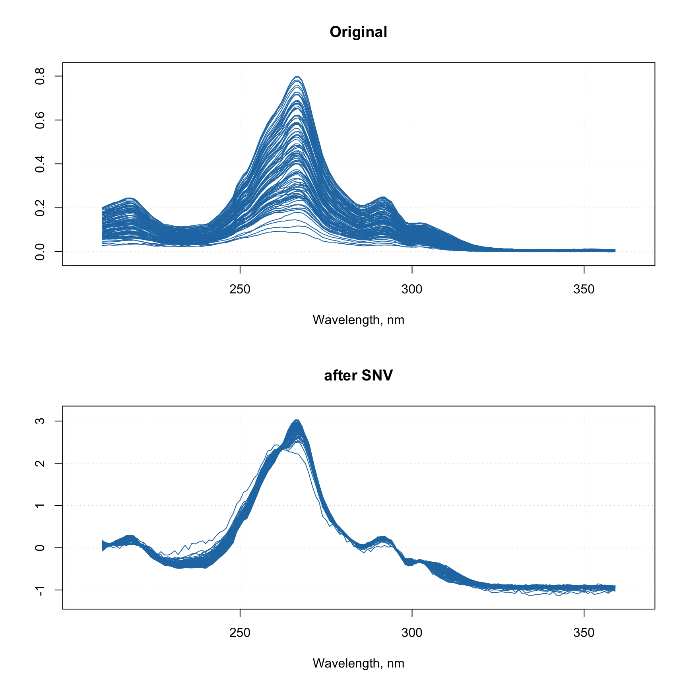
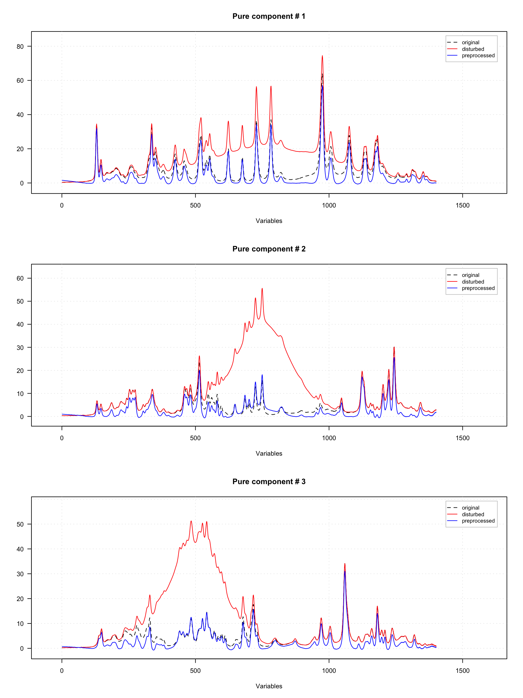

Correction of spectral baseline
Baseline correction methods include Standard Normal Variate (SNV), Multiplicative Scatter Correction (MSC) and correction of baseline with Asymmetric Least Squares (ALS). SNV is a very simple procedure aiming first of all at remove additive and multiplicative scatter effects from Vis/NIR spectra as well as correct the global intensity effect. It is applied to every individual spectrum by subtracting its average and dividing its standard deviation from all spectral values. Here is an example:
# load UV/Vis spectra from Simdata
data(simdata)
ospectra = simdata$spectra.c
attr(ospectra, "xaxis.values") = simdata$wavelength
attr(ospectra, "xaxis.name") = "Wavelength, nm"
# apply SNV and show the spectra
pspectra = prep.snv(ospectra)
par(mfrow = c(2, 1))
mdaplot(ospectra, type = "l", main = "Original")
mdaplot(pspectra, type = "l", main = "after SNV")
Multiplicative Scatter Correction does similar job but in a different way. First it calculates a mean spectrum for the whole set (mean spectrum can be also provided as an extra argument). Then, for each individual spectrum, it makes a line fit for the spectral values and the mean spectrum. The coefficients of the line, intercept and slope, are used to correct the additive and multiplicative effects correspondingly.
The prep.msc() function adds the mean spectrum calculated for the original spectral data, to the attributes of the results, so it can be reused later.
# apply MSC and and get the preprocessed spectra
pspectra = prep.msc(ospectra)
# show the result
par(mfrow = c(2, 1))
mdaplot(ospectra, type = "l", main = "Original")
mdaplot(pspectra, type = "l", main = "after MSC")Baseline correction with asymmetric least squares
Asymmetric least squares (ALS) baseline correction allows you to correct baseline issues, which have wider shape comparing to the characteristic peaks. It can be used for example to correct the fluorescence effect in Raman spectra.
The method is based on Whittaker smoother and was proposed in this paper. It is implemented as a function prep.alsbasecorr(), which has two main parameters — power of a penalty parameter
(plambda, usually varies betwen 2 and 9) and the ratio of asymmetry (p, usually between 0.1 and 0.001). For example, if plambda = 5, the penalty parameter \(\lambda\), described in the paper will be equal to \(10^5\).
The choice of the parameters depends on how broad the disturbances of the baseline are and how narrow the original spectral peaks are. In the example below we took original spectra from the carbs dataset, add baseline disturbance using broad Gaussian peaks and then tried to remove the disturbance by applying the prep.alsbasecorr(). The result is shown in form of plots.
library(mdatools)
data(carbs)
# take original spectra from carbs dataset
x <- t(carbs$S)
# add disturbance to the baseline by using broad Gaussian peaks
y <- x + rbind(
dnorm(1:ncol(x), 750, 200) * 10000,
dnorm(1:ncol(x), 750, 100) * 10000,
dnorm(1:ncol(x), 500, 100) * 10000
)
# preprocess the disturbed spectra using ALS baseline correction
y.new <- prep.alsbasecorr(y, plambda = 5, p = 0.01)
# show the original, disturbed and the preprocessed spectra separately for each component
par(mfrow = c(3, 1))
for (i in 1:3) {
mdaplotg(list(
original = x[i, , drop = FALSE],
disturbed = y[i, , drop = FALSE],
preprocessed = y.new[i, , drop = FALSE]
), type = "l", lty = c(2, 1, 1), col = c("black", "red", "blue"),
main = paste("Pure component #", i)
)
}
As one can notice, the blue curves with corrected spectra are pretty similar to the original spectra shown as dashed black curves.